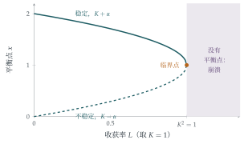

STEP II 1995，第 8 题
继续之前，请先阅读题目（原题为英文）。题目载于 STEP Support Programme 的题目资料库： step.maths.org/questions/95-s2-q8
引子
食物供应无限的种群会以指数增长（exponential growth）的方式扩张。现实中的种群却总会用尽空间：当种群数量接近环境所能维持的上限，即其环境承载力（carrying capacity）时，增长便会放缓。描述这个现象的最简单模型是逻辑斯谛方程（logistic equation），它出现在本题的前半部分，由培养皿中的细菌到新科技的普及，都可以用它来描述。
后半部分所问的，是一个在现实中关系重大的问题：假如我们以稳定的速率收获（harvest）这个种群，会发生甚么事？在某个阈值（threshold）以下，种群会调整到一个新的、较低的平衡点（equilibrium）。但只要收获率越过这个阈值，哪怕只是超出少许，平衡点便会消失，种群数量随即崩溃至零。这就是渔业崩溃背后的数学，也是设立捕鱼配额的原因。
动笔之前
在动手求解之前，先把增长率 \((2K - x)x\) 当作 \(x\) 的函数，画出它的略图。它在哪里为零？在哪里为正？这告诉你 \(x\) 会怎样变化？
增长率在 \(x = 0\) 和 \(x = 2K\) 处为零，在两者之间为正，超过 \(2K\) 则为负。所以，由 \(0\) 与 \(2K\) 之间出发的种群会向 \(2K\) 增长，而由 \(2K\) 以上出发的种群则会向它缩减。环境承载力是 \(2K\)，而增长在 \(x = K\) 时最快，那时的增长率是 \(K^2\)。不必解方程，你也能预测长远的变化。
逐步解题
阶段 1 解逻辑斯谛方程
分离变量（separate the variables）：\(\displaystyle\int \frac{\mathrm{d}x}{(2K - x)x} = \int \mathrm{d}t\)。把左边拆成部分分式（partial fractions）。
\(\dfrac{1}{(2K - x)x} = \dfrac{1}{2K}\left(\dfrac1x + \dfrac{1}{2K - x}\right)\)，所以 \[\frac{1}{2K}\ln\frac{x}{2K - x} = t + C.\] 当 \(t = 0\) 时，\(x = K\)，所以 \(\ln 1 = 0\)，而 \(C = 0\)。于是 \(\frac{x}{2K - x} = e^{2Kt}\)，由此得 \[x = \frac{2Ke^{2Kt}}{1 + e^{2Kt}} = \frac{2K}{1 + e^{-2Kt}} = K + K\frac{1 - e^{-2Kt}}{1 + e^{-2Kt}}. \qed\] 这个分式就是 \(\tanh(Kt)\)，所以 \(x = K + K\tanh Kt\)：这是一条由 \(K\) 上升并趋向 \(2K\) 的 S 形曲线。当 \(t \to \infty\) 时，\(e^{-2Kt} \to 0\)，而 \(x \to 2K\)。
阶段 2 收获
以速率 \(L\) 移走细菌，便得 \[\frac{\mathrm{d}x}{\mathrm{d}t} = (2K - x)x - L.\]
对 \((2K - x)x - L\) 进行配方（complete the square）。它的零点在哪里？
\((2K - x)x - L = K^2 - L - (x - K)^2 = \alpha^2 - (x - K)^2 = \bigl(\alpha - (x - K)\bigr)\bigl(\alpha + (x - K)\bigr)\)。平衡点是 \(x = K \pm \alpha\)。
现在作代换（substitution）\(y = x - K + \alpha\)。\(y\) 满足甚么方程？把它与原来的逻辑斯谛方程比较一下。
设 \(y = x - K + \alpha\)，则 \(x - K = y - \alpha\)，所以 \(\alpha + (x - K) = y\)，而 \(\alpha - (x - K) = 2\alpha - y\)。因此 \[\frac{\mathrm{d}y}{\mathrm{d}t} = (2\alpha - y)y,\] 这又是逻辑斯谛方程，只是 \(K\) 换成了 \(\alpha\)。初始时 \(y(0) = K - K + \alpha = \alpha\)，正好对应第一部分的 \(x(0) = K\)。所以根据第 1 阶段的结果（以 \(\alpha\) 代替 \(K\)），\(y(t) = \alpha + \alpha\tanh\alpha t \to 2\alpha\)，因此 \[x(t) = K + \alpha\tanh\alpha t \to K + \alpha. \qed\]
回顾
先作定性分析。还未动手求解，增长率的正负号已经预测了长远的变化。
配方揭示平衡点。有收获的方程的平衡点在 \(K \pm \alpha\)。
代换把新问题化为旧问题。把变量平移之后，有收获的方程便变成了早已解出的逻辑斯谛方程。
背后的数学
有收获的方程有两个平衡点，\(K + \alpha\) 和 \(K - \alpha\)。上面的一个是稳定（stable）的：种群数量稍高于或稍低于它，都会回到它那里。下面的一个是不稳定（unstable）的：种群数量只要稍低于 \(K - \alpha\)，便会一直下跌，直至灭绝。随着收获率 \(L\) 增加，\(\alpha = \sqrt{K^2 - L}\) 会缩小，两个平衡点互相靠近；到 \(L = K^2\) 时两者合而为一，而当 \(L > K^2\) 时则完全没有平衡点，任何种群都会崩溃（图 8.3.1）。这是一个鞍结分岔（saddle-node bifurcation），是最简单的一种临界点（tipping point）。它的可怕之处，在于事前没有任何明显的预兆：当 \(L\) 接近 \(K^2\) 时，平衡种群数量只是缓缓下降，然后平衡点突然不复存在。事后才减少收获未必有用，因为种群数量可能已经跌到不稳定的阈值以下。

最大可持续产量
种群所能承受的最大收获量是多少？答案是 \(L = K^2\)，即增长率 \((2K - x)x\) 的峰值，在种群数量维持于 \(K\)（环境承载力的一半）时达到。二十世纪中叶，渔业科学采纳了这个“最大可持续产量”（maximum sustainable yield）作为管理目标。可是，恰好按最大值收获，就等于把系统恰好放在临界点上，只要稍为高估了 \(K\)，或者遇上一个坏年头，便会引致崩溃。纽芬兰对开的大浅滩（Grand Banks）鳕鱼渔场，五百年来一直是全世界最丰饶的渔场之一，却在 1990 年代初崩溃；1992 年，加拿大政府颁布禁捕令，令数以万计的人失去工作。鱼类资源至今仍未完全恢复。
其他地方的逻辑斯谛增长
逻辑斯谛方程由 Pierre-François Verhulst 于 1838 年提出，用来为人类人口建立模型。同一条 S 形曲线，也描述了疫症初期的传播、新科技的普及、自催化化学反应以及肿瘤的生长。它的离散时间版本，即逻辑斯谛映射（logistic map），表现却截然不同：它可以是混沌（chaotic）的，我们会在 第 8.7 节 看到。
思维技巧
对于方程 \(x' = f(x)\)，平衡点就是 \(f\) 的零点，而 \(f\) 在各零点之间的正负号，告诉你解会向哪个方向移动。
若 \(f\) 在某个平衡点由正变负，该平衡点是稳定的；若由负变正，则是不稳定的。画出 \(f\) 的图像，往往不必求解任何东西，便能回答最重要的问题。
延伸练习
由低处出发。在有收获且 \(K^2 > L\) 的情况下，证明若 \(x(0) < K - \alpha\)，则种群数量会在有限时间内降至零。（提示：当 \(y(0) < 0\) 时，\(y\) 会怎样变化？）
过度收获。若 \(L > K^2\)，设 \(\beta = \sqrt{L - K^2}\)。在 \(x(0) = 2K\) 的条件下解 \(x' = -(x - K)^2 - \beta^2\)，并求种群数量何时降至零。
按比例收获。假设改为移走种群中某个固定的比例：\(x' = (2K - x)x - hx\)。求平衡点，并证明对所有 \(h < 2K\)，种群都能存活。为甚么这个方案较为安全？
半程时间。在没有收获的情况下，求种群数量达到 \(\frac32K\) 的时间。
延伸阅读
Steven Strogatz, Nonlinear Dynamics and Chaos（CRC Press）。第 3 章讨论分岔，并以这个收获模型作为习题。
Nicholas Britton, Essential Mathematical Biology（Springer）。为大学本科生而写的种群模型。
Mark Kurlansky, Cod: A Biography of the Fish That Changed the World（Penguin）。鳕鱼渔业及其崩溃的历史。